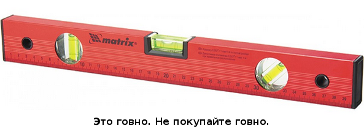

Самое первое: в магазинах практически невозможно найти правильно настроенного уровня. Невозможно купить уровень и начать им пользоваться по двум причинам:
Выбор уровня
Тут правило очень простое: не покупайте нерегулируемый (запаянный) уровень. Утверждение, что производители делают уровни по каким-то нормам, и выставляют уровни на заводе - в корне неверное. Найти правильно выставленный нерегулируемый уровень невозможно, это аксиома. Даже если вы в магазине проверите уровень и он покажется вам правильно выставленным, каково будет ваше разочарование, когда дома в спокойной обстановке вы увидите, что на самом деле он выставлен не точно.

Как проверить уровень в магазине? Очень просто. Положите уровень на любую, кажущуюся вам горизонтальную поверхность.